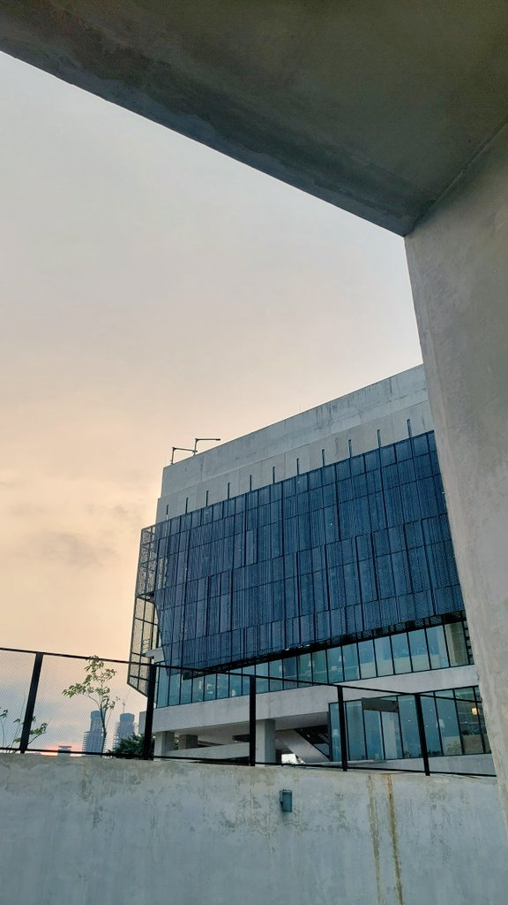
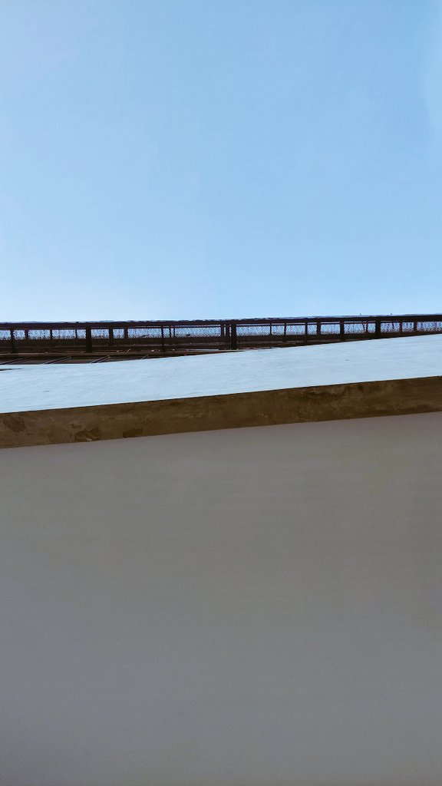
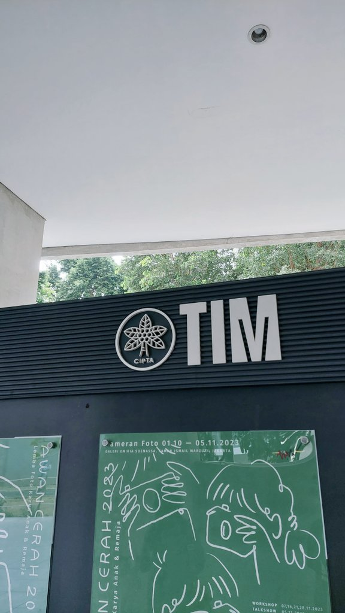
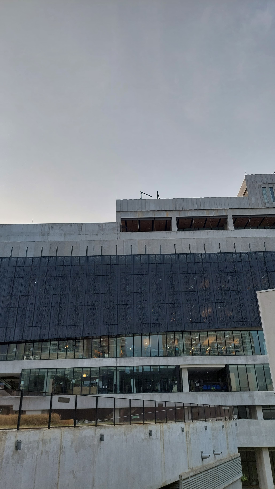
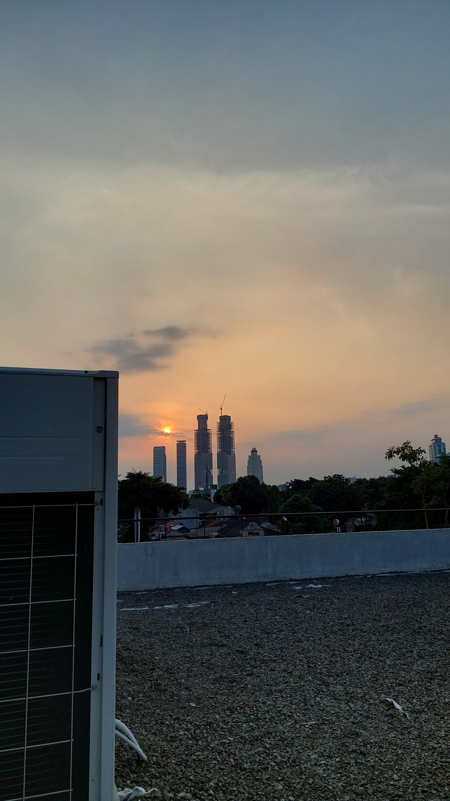
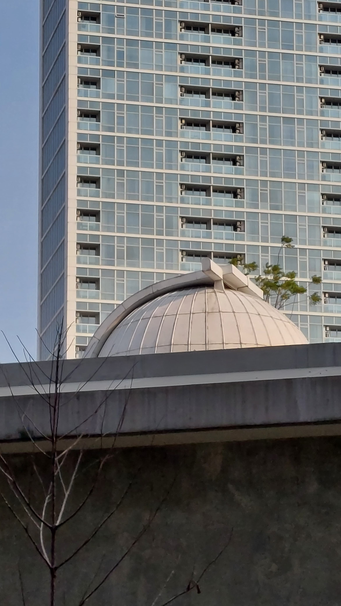
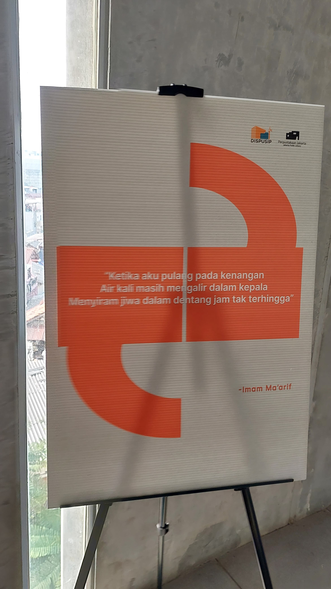

All about hobby
Musik adalah hobby gue, secara spesifik musik yang gue gemari adalah musik dengan instrumen yang banyak. contohnya seperti orkestra, marching band, dan keroncong. Lantunan dari masing-masing instrumen menjadi detail yang enak banget buat gue dengerin. Sekali seumur hidup lu harus cobain nonton konser band-band seperti yang gue kasih tau di atas.
Work out
Bicara work out, itu kegiatan penting yang harus gue lakuin minimal 1 minggu sekali. Gue bukan tipe orang yang suka junk-food, tapi juga ga healthy-healthy banget. Jadi gue perlu work out untuk jaga imun dan kebugaran badan gue. Kita ga pernah tau kesibukan apa yang kita hadapi besok, makanya kalau sore ini kosong mending gas work out ya!
Mind blow Movie
Ga bosen-bosen gue selalu ngasih rekomendasi filmnya Chirstopher Nolan. Asli men itu keren banget! yang lu butuhkan hanya fokus dan pasang headset saat nonton film mamang Nolan. Jalan cerita, efek partikel, sound script, plot twist. Alahh kacauuuu men, pokoknya sense lu dibikin acak-acakan. Lu bisa ngerasain harmonis, kesendirian, dan puncak perjuangan di setiap film nya mamang Nolan.
Temen Balung
Yheepp, Balung. atau kalau disebut panjangnya jadi Bale Ungu. Pos ronda kecil yang membawa gue dan temen-temen gue tumbuh menjadi dewasa. Gak kerasa memang gue yang dulu masih piyik, sekarang udah jadi sandwich. Gue merasa berterima kasih sama kalian mek(panggilan untuk temen-temen Balung).






